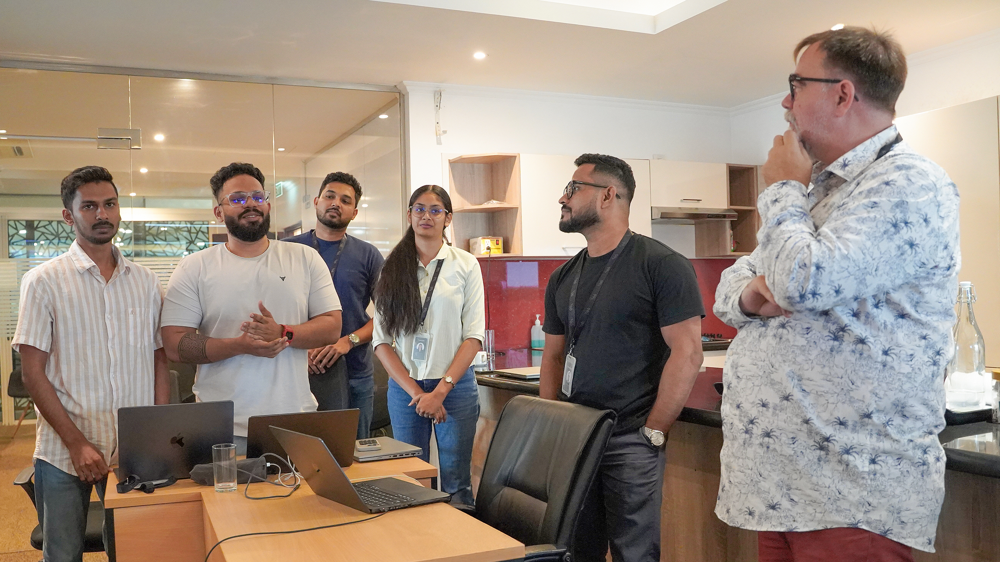
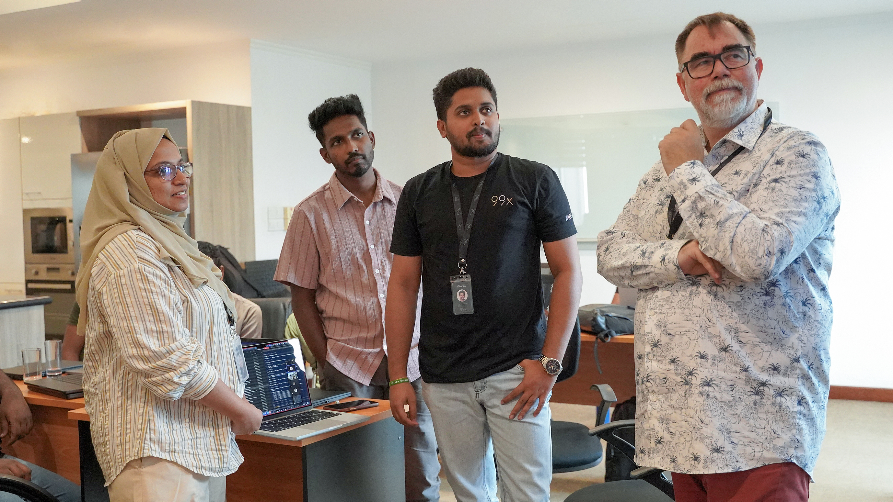

99x
Field report · AI-native delivery
Read the full report →
2023 → 2026
Three years of learning how AI changes delivery.
What we tried, what broke, and what we changed.
4
phases
3 yrs
tools to own framework
41%
faster cycle time
5,000+
training hours, 2026
01 / Context
The bottleneck moved. Our process didn’t.
[a]
Spec debt outgrew code debt
A feature took a day to build, a week to agree on.
[b]
Review became the queue
Speed up one step, and the next one chokes.
[c]
Clients asked how, not whether
AI usage had to be documented before signing.
02 / How it unfolded
Four phases, each one a correction of the last.
2023 · PHASE 01
AI as a productivity tool
Assistive use on the work already in front of us.
Watching closely where the help was real.
2024 · PHASE 02
Velocity outgrew the process
Hand-offs and review became the slow part.
Estimates and ownership broke.
2025 · PHASE 03
Rebuilding the process around the pace
Spec-driven context written as markdown.
Then: doc sprawl and lost knowledge.
2026 · TODAY
Our own control plane and framework
Xianix.ai + the Intent Delivery Framework.
Intent-first, gated, auditable.
Value delivered / 2023 → 2026RealisedProjected
Reading the curve
Expect a dip before the gain.
Quit in the dip and you get a one-off bump. Push through and the curve compounds.
03 / The model
Copilots, autopilots, and the process that governs both.
Bottom-up
Copilots
Pulled by an engineer, in the IDE, when the work calls for it.
Top-down
Autopilots
Fired by delivery events. Each stops at a human who signs.
Governs both
Process
Intent Delivery Framework: Inception → Construction → Operate → Improve.
+ PeopleEvery change traces to a written intent, and a named engineer signs it.
03 / How the tools plug in
Plugins: capability without a platform release.
04 / The agent loop
Six agents, one loop, a human at every gate.
04 / The agent that audits the rest
How the review agent works.
04 / Adoption without a rewrite
Take a skill, not the framework.
05 / Observability
You cannot improve what you cannot see.
WorkflowsYour real process, modelled first.
ActorsEngineers and agents, both first-class.
EventsOne step, keyed by a correlation id.
A single event
{
"correlationId": "550e8400-…",
"actors": ["alice@99x.io",
"PR Review Agent"],
"dimensions": {
"tokens": 1200,
"costUsd": 0.024,
"model": "gpt-4.1"
}
}
Which task, who took part, what it cost, which model.
05 / The path of one metric
How a number reaches the dashboard.
06 / The whole picture
Every part, in one diagram.



07 / Training
Tools arrive in a week. Habits take a quarter.
5,000+training hours in 2026
Train on live work
Taught by people who ship
Continuous, not a launch event
08 / Evidence
What the numbers did.
−41%
Cycle time, idea to production
18 → 10.6 days
−73%
Pull-request review latency
26 → 7 hrs
−44%
Escaped defects per release
4.1 → 2.3
2.6×
Engineer time on discovery & spec
12% → 31%
Medians across 14 squads vs. 2023. Read as direction, not benchmarks.
09 / Mistakes worth copying from
Four errors, and what each one taught.
01
We measured output before outcomes
PR counts rose; client value didn’t.
02
Tooling without process is faster chaos
Velocity, in the wrong direction.
03
Reviewers needed retraining, not time
Reviewing agent code is a different skill.
04
Transparency before the pitch
Trust came once we showed where data went.
10 / Open questions
What we still do not know.
How far can agents go in legacy modernisation?
Can eval coverage be a contractual quality signal?
How do engineers keep owning what agents produce?